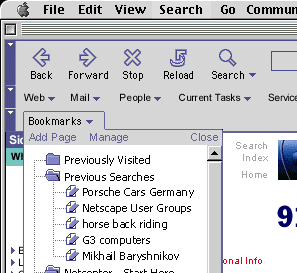
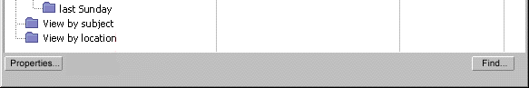

| Across Communicator Seamonkey Applications |
UI Specification
|
|
Search send feedback to the component specific newsgroup |
Last
Modification: 20 Feb 1999
|
| Author German
W. Bauer Initial Creation Date: 12 February 1999 |
Status: Rough Proposal based on usability testing and development in the Mozilla Classic and 4.0 timeframes. Still need to consolidate with PM and smart browsing user experience. Not spellchecked so use at your own risk! |
Quicklinks:
Overall Seamonkey UI Homepage Design Overview |
Feature Team
|
Older spec, will be updated |
Summary/Overview
This specification deals with the corss applications and 'across scope' aspect of search within Communicator Seamonkey.Goals
- One unified entry point for search in general in the UE
- Integrate multiple sources and different types of data into search
- Scope of the search is smart, i.e. determined by the context the user is in
- but users can access other search scopes, no matter what context they come from
- Meaningful integration with Netcenter Homepage 3.0
Target Audience
With the amount of data available on the Net increasing every day, Search has become one of the major activities of end-users. The target user for search is best described by looking at the target user for C5 in general, with emphasis on newcomers, as they will tend to use search as an initial way to get around on the net.
User Tasks
Fundamental Tasks Intermediate Tasks Advanced Tasks Search the Net (through Netcenter)
Find on a piece of content (e.g. a page)
Search messages
Going back to search results page (as a means of navigating) Turn search into 'virtual folder'
Design Cheatsheet
 |
 |
 |
Design
Details
Possible Search Scopes and scope hierarchy
- Scope of the search is smart, i.e. determined by the context the user is in
- but users can access other search scopes, no matter what context they come from
Here is a proposal for a search scope structure:
 |
Context Scopeapplication specific:Inside the currently opened document(e.g in this message) |
 |
Generally available searchessame from every app on the communicator platformThe web |
Entry points for search
Main Menu
Search button on toolbar (possibly with scope qualifier)
Through Search History
Inside Bookmarks window
Inside History window

Possibly from within people/address book

Searchable data types and criteria mapping when using mixed media types
When specifying criteria or displaying results from mixed data types we need to do some 'intelligent' mapping for the criteria. Here is a first try at sorting the most important criteria:
|
Data
type:
|
Bookmark/Link | Web Page | Message | Person | OS File |
|
Criteria:
|
|||||
|
Name
|
Title/Name | Title | Subject | Name | File name |
|
Date
|
Last visited | Last updated | Date received | Last contacted? | Last modified |
|
Address
|
URL address | URL address | Sender | Email address | Path to file |
Results presentation (prelim thinking)
In Messenger:
-
In seperate window with list view with regualr action enabled (e.g. drag and drop)
-
Integrated into 3 pane view as a view onto a tremporary folder
Upon concluding the search operation this would ask the user whether to save the search for later re-use
- online: would re-enact query
- would show 'stale' copy of search results
In Navigator:
-
As a webpage on Netcenter (like prev browser versions)
-
In seperate window with list view with regular action enabled (e.g. drag and drop)(prob. OUT for Seamonkey) -
As a virtual folder in the sidebar(prob. OUT for Seamonkey)Upon concluding the search operation this would ask the user whether to save the search for later re-use online: would re-enact querywould show 'stale' copy of search results
Persistence of results
Main reason why users want persistence:
- As a navigational aid: so they can come back to the search results location quickly
Benefits to Netcenter:
- Stickyness: users can quickly get back to the Netcenter search page rather getting lost and driven away by a trail of links that originated in the results page. Navigator will support them in finding their way back.
Implementation:
Menus
& Preferences
Search menu
TBD
Preferences
TBDError Messages and Dialogs
Condition Message User Choices
Issues
Need to be consolidated with smart browsing!
Archived Documents
Examples of special formatting:
Revision Marks
Rev 1: first stab, UI design docs and FE eng and tech specs, as well as initial talks with PM and Netcenter
Special Notes
|